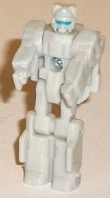
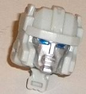
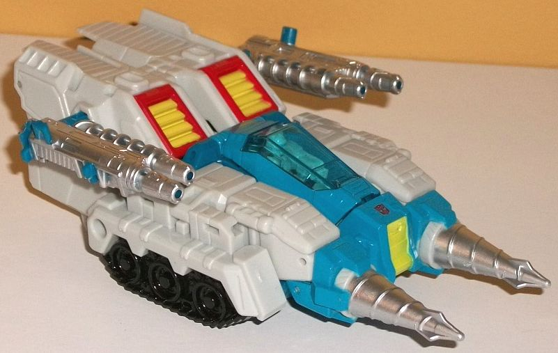
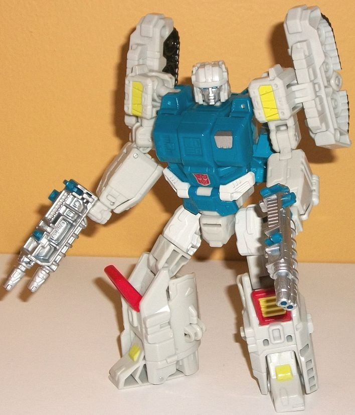

Allegiances
: Autobot
Size
: Deluxe
Difficulty of Transformation
: Medium
Color Scheme
: Off-white, moderately
dark turquoise, and some silver, black, pale light yellow, transparent
pale blue, metallic blue, and red
Rating
: 9.5
(NOTE: Because this is a repaint, this is not a full-blown review. This mainly covers any changes made to the mold and the color scheme, and merely compares it to Titans Return Topspin w/ Freezeout. For a review on the mold itself, read the review of Titans Return Topspin w/ Freezeout here .)


Since Twin Twist is
a remold of Topspin, Flameout is a remold of... (wait for it)... Freezeout.
Thus, in his robot mode, Flameout looks a lot like a mini-Topspin... only
in off-white. Seriously, his robot mode is ENTIRELY off-white, with the
exception of the metallic blue strip on his visor. As glad as I am there's
actually paint on a Titan Master's robot mode, having the entire rest of
the robot mode be just a bland color like off-white is pretty... well,
bland. In head mode, of course the facesculpt has been changed to fit Twin
Twist's. He's got a fairly round helmet with a line across the forehead,
and with a fairly normal face, eyes, and mouth. The sculpt overall is pretty
good, except for the lips-- they're a bit puffy. As for paint, there's
silver on the face and metallic blue on the eyes, but otherwise he's still
all off-white-- though of course, in this mode, that's accurate to the
source material. Plus, the positive of that in this mode is that both the
Titan Master arms and legs behind the face are all the same color, so the
head as a whole looks more solid and like it's one piece.


Even though it doesn't
look initially like it, Twin Twist has only two mold changes made to the
base mold (so not including the head); the wings from Topspin have been
replaced with treads, and the twin fins on the front of Topspin have been
changed to drills (along with the small section in front of the cockpit
itself). The treads are fairly well-detailed, with gears and all the like
molded in there (there's little wheels on the underside of the treads,
the latter don't roll themselves). There's also the usual 5mm ports near
the back end of each tread piece. The drills are fariy well-done too, but
they unfortunately don't turn or anything... so Twin Twist can't twist
his twins, I guess. Otherwise the mold details are all the same, with the
same transformation. In robot mode this leads to the drills being on Twin
Twist's back at an angle, which looks kinda odd-- even more odd than Topspin's
nosecone bits back there. Additionally, the treads don't frame the shoulders
as well as Topspin's wings do.
As for the color scheme,
as was the case with the G1 toy, Twin Twist's is essentially an inverse
of Topspin's; that is, the fairly dark turquoise is used mostly on the
inner bits-- such as the cockpit and robot mode chest-- as well as the
guns and front drill pieces. The off-white color is now used on most of
the rest of the toy-- the robot arms, waist, and legs, mostly. Even the
chest's color is inverted, with an off-white stripe on the bottom of the
abs that corresponds to a turquoise stripe on that same area on Topspin.
The colors contrast against each other just as well as on Topspin, but
the off-white isn't as great of a color as turquoise, so using it as the
dominant color this time around makes Twin Twist a bit more dull, in my
opinion. As for paint apps, there's some great red squares around the rear
vents/robot kneecaps, which looks VERY nice against the white; I wish this
color had been used more on the toy. There's also some pale yellow on said
vents, the upper arms, and on the front of the vehicle mode, which would've
looked better as a more straightforward yellow but is still okay. There's
also the expected silver paint on the gun weapons and the drills, as well
as a bit on his chest, and the treads are painted a glossy black. The back
end/legs could've used a bit more paint, but otherwise Twin Twist's colors
are varied enough. He has all the same articulation as Topspin.
Titans Return Twin Twist
is an excellent mold, looking generally great in both modes and with an
incredibly intuitive transformation. That said, nearly all of the changes
made to him are inferior compared to Topspin-- the more prominent usage
of off-white in the color scheme; the treads on the shoulders instead of
wings; the oddity of the twin drills poking out of his back in robot mode;
and the incredible blandness of Flameout's robot mode. He's still an awesome
toy and one of the best Titans Return has to offer, but Topspin is the
better of the two.
Review by Beastbot